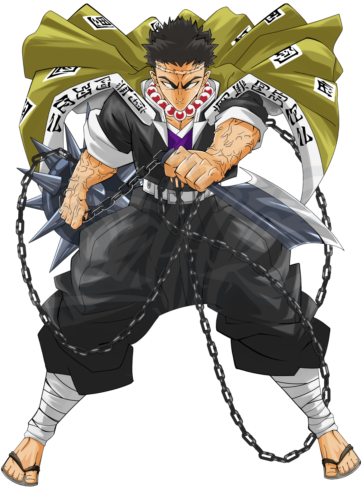
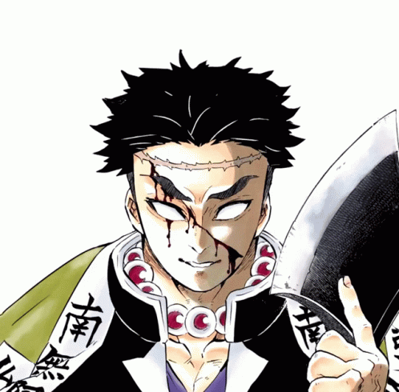
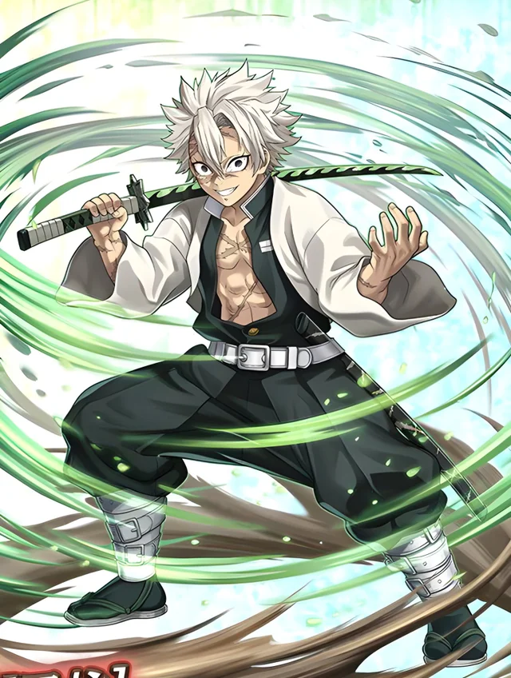
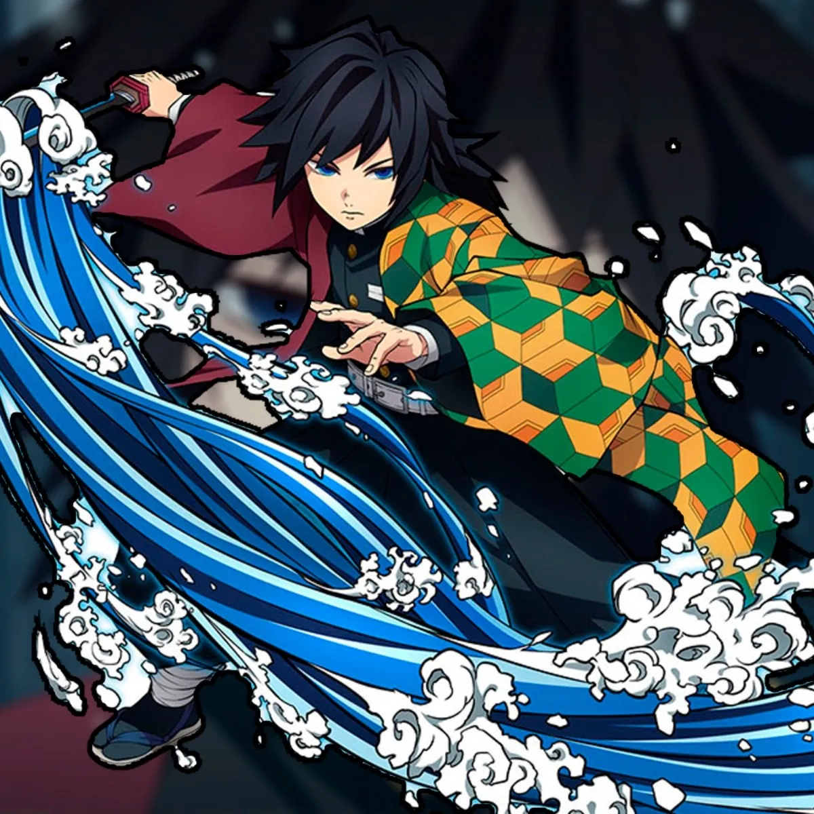

,

He is the current Stone Hashira and uses the Breath of Stone.
Despite his intimidating apperance, He is extremely gentle and sensitive.
Although blind, he has an immense speed and reflexes and is ranked the Strongest Hashira.
He also possesses possesses tremendous levels of physical endurance, stamina and the greatest level of physical strength in the entire Demon Slayer Corps.
Unlike ordinary Demon Slayers who use swords in combat, Gyomei wields a swinging weapon, consisting of an axe attached flail via a long chain.
The echoes created by the chain can be picked up by Gyomei's acute sense of hearing to accurately grasp the space and movements around him, further enhancing its effectiveness in battle.
On the hilt of his axe, the words Destroyer of Demons are carved.
The grey-colored blade symbolises stone.
Given his movements, Gyomei's weapon needs to be extremely strong and sturdy, just like the user and his fighting style.


Giyu Tomioka - THE WATER PILLAR
